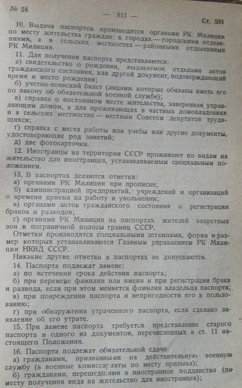

http://ihistorian.livejournal.com/71451.html
http://ihistorian.livejournal.com/77931.html
http://ihistorian.livejournal.com/89832.html
ihistorian
Тяжело ли было крестьянину уйти из деревни?
Это я про 1930-е гг. Знаю я, что это период невиданного переселения из деревни в город)) Но ведь есть сердобольные, которые сомневаются: а вдруг, вот энтому и энтому обломали счастье… без паспортов-то. Похоже, что не могли обломать…
CЗ СССР, 1930 г., отдел первый.
Постановление СНК СССР «Об устранении препятствий к свободному отходу крестьян на отхожие промысла и сезонные работы» от 16 марта 1930 г.
Паспорта ввели позже – в 1932 г. И речь здесь не об окончательном переселении в город.
Однако, логика государства прозрачна: вас в деревне и так много, а вот в
города рабочие руки необходимы.
Так что и после 1932 г. отказ в выдаче
колхознику справки для выезда в город вполне мог привести к уголовной
ответственности.
В принципе, я встречал постановление, вышедшее где-то после 1932 г., о том, что препятствие колхознику выйти из колхоза и переехать только одно – расплатиться по имеющимся долгам. Не найду только.
А, вообще, вся эта демагогия про беспаспортных крестьян выглядит странно. Вот пройдет лет двадцать и в обязательном порядке граждан заставят вшить под кожу чипы, которые будут показывать положение гражданина в любой момент времени. Под предлогом борьбы с преступностью разумеется. А без чипа не продадут билет и не примут на работу. И тогда тоже особо одаренные станут говорить, что эти чипы – показатель свободы…Неужели непонятно, что паспорт – это ошейник на домашней собаке? А свободные дворняжки гуляют сами по себе, хотя и не могут участвовать в каких-то собачьих конкурсах)))
Нашел таки я у себя это постановление ЦИК и СНК СССР от 17 марта 1933 г. «О порядке отходничества из колхозов».

Данное постановление, таким образом, не запрещает уход из колхоза. Постановление о том, что покинуть колхозное хозяйство для работы на стороне без лишения статуса колхозника можно только по договоренности с колхозом. Это логично. Самое страшное наказание при самовольном уходе (возможном то есть) - исключение из колхоза. Но так желающему окончательно переселиться в город это по барабану?
Обращаю также внимание, что на этот момент исключение из колхоза уже было очевидным НАКАЗАНИЕМ
К постановлению ЦИК и СНК СССР от 17 марта 1933 г. «О порядке отходничества из колхозов» нашел инструкцию и разъясняющее постановление Наркомата тяжелой промышленности. Инструкция Наркомтруда и Наркомзема СССР о применении постановления ЦИК и СНК СССР от 17 марта 1933 г. о порядке отходничества из колхозов. Газета «За индустриализацию», 23 апреля 1933 г.
Постановление НКМТ о применении нового закона об отходничестве из колхозов. Газета «За индустриализацию», 23 апреля 1933 г.
Анализируя найденные документы, я делаю выводы:
- О препятствиях к выезду из деревни единоличников не сообщается.
- На этот момент издания постановления 17 марта 1933 г. крестьяне-колхозники реально работали на промышленных предприятиях городов, пользуясь при этом специальными льготами по постановлению 30 июня 1931 г.
- Постановление 17 марта 1933 г. обязало колхозников, пожелавших работать в городе, делать это только заключая договор с промышленным предприятием. В этом случае льготы отходникам в колхозе сохранялись.
- Согласно инструкциям правление колхозов при наличии на руках потенциального отходника такого договора выполняло только регистрирующую функцию в течение 3-х дневного срока, но не разрешительную. Не имели колхозы права и отзывать своих колхозников с предприятий даже в страду.
- Для стимулирования колхозов, отпускающих своих членов по договорам на работу на предприятия предусматривалась материальная и организационно-техническая помощь этих предприятий.
- Максимальное наказание, которое грозило уехавшему в город на работу колхознику, - исключение из колхоза. Если антисоветчики уверены, что колхозники рвались из колхоза в город, то, очевидно, для них это должно было быть наградой, но не наказанием.
Постановление ЦИК и СНК СССР от 30 июня 1931 г. "Об отходничестве".
Для привлечения колхозников, а также единоличников на работу в отход Центральный исполнительный комитет и Совет народных комиссаров Союза ССР постановляют:
I. Льготы для колхозников - отходников
Установить следующие льготы для всех колхозников, которые контрактуются на работу в государственной промышленности (в том числе на лесозаготовках, на сплаве, на торфоразработках, на рыбной путине и т.п.), на транспорте, в совхозах, а также на государственных строительствах и строительствах потребительской и жилищно - строительной кооперации:
1. Отходники - колхозники полностью освобождаются от всяких отчислений с заработка в общественные фонды колхозов.
2. Чтобы обеспечить участие колхозников - отходников в распределении денежной и натуральной части дохода колхоза, им предоставляется работа в колхозе, после возвращения с заработков, в первую очередь.
3. При распределении урожая в колхозе обязательно выделяется часть урожая для снабжения колхозников - отходников по установленным ценам и в том же количестве, в каком снабжаются остальные колхозники, добросовестно работающие в колхозе.
4. Остающиеся в колхозе трудоспособные члены семьи отходника принимают участие в работах колхоза на общих основаниях.
Если по количеству трудодней семья отходника не может получить необходимого для нее количества продовольствия и кормовых средств или в семье нет трудоспособных, то при распределении урожая правление колхоза обязано обеспечить ее продовольствием и кормовыми средствами в том же количестве, какое получают колхозники, добросовестно работающие в колхозе, по тем же ценам за наличный расчет.
Примечание. Если трудоспособные члены семьи отходника отказываются от работы в колхозе, то семья этой льготой не пользуется, а сам отходник пользуется льготой, указанной в ст. 3.
5. Установленное процентное отчисление, распределяемое между колхозниками соразмерно обобществленному имуществу, целиком распространяется и на имущество колхозников - отходников на общих основаниях с другими колхозниками.
6. Семьи колхозников - отходников пользуются наравне с прочими членами колхоза всеми льготами по здравоохранению и получению дефицитных товаров. Члены этих семей имеют преимущество при поступлении в школы, на курсы и т.п. для получения и повышения квалификации.
7. Семьи колхозников - отходников пользуются помощью колхоза (предоставление инвентаря для обработки усадебных огородов, предоставление подвод и т.п.) наравне с прочими членами колхоза.
8. Колхозники - отходники освобождаются от сельско - хозяйственного налога с необобществленной части хозяйства, включая неземледельческие заработки.
9. В договорах хозяйственных органов с отходниками - колхозниками должны предусматриваться:
а) обеспечение отходников жилищем и продовольствием;
б) оплата хозяйственным органом расходов отходника по переезду с места жительства к месту работы и обратно (по окончании срока договора) в размере действительной стоимости;
в) выплата отходнику суточных за время пути в размере 2 руб. 50 коп. в день.
10. Перечисленными льготами пользуются:
а) колхозники - отходники, которые идут на заработки по договорам с соответствующими хозяйственными органами;
б) прочие колхозники, если они представят удостоверение от хозяйственного органа о своей работе.
11. Колхозники - отходники, ушедшие с работы до срока, на который они законтрактовались, лишаются льгот.
II. Меры поощрения колхозов, заключающих договоры с хозяйственными органами о выделении рабочих - отходников или о содействии вербовке своих членов на работу в отход
Установить следующие меры поощрения колхозов, заключающих договоры о выделении рабочих - отходников или о содействии их вербовке для работы в отход в государственной промышленности, на транспорте, в совхозах, а также на государственных строительствах и строительствах потребительской и жилищно - строительной кооперации.
12. В договорах хозяйственных органов с колхозами о выделении рабочих - отходников или о содействии их вербовке должно быть особо предусмотрено, что хозяйственные органы предоставляют колхозам специальные средства для улучшения их производства в соответствии с количеством колхозников, заключивших договоры с хозяйственными органами на отход.
13. Народному комиссариату земледелия Союза ССР и советам народных комиссаров союзных республик поручается организовать преимущественное снабжение сельско - хозяйственными машинами тех колхозов, которые выделяют значительное количество отходников - колхозников.
14. Советам народных комиссаров союзных республик поручается для таких колхозов установить преимущества при организации школ и других культурно - просветительных учреждений, яслей, детских домов и т.п.
15. Потребительская кооперация обязана установить преимущества при выделении средств и оборудования для организации социально - бытовых учреждений (столовых и т.п.) для тех колхозов, которые дают наибольшее количество отходников.
16. Перечисленными льготами пользуются те колхозы, которые обеспечат действительное выполнение договоров, заключенных с хозяйственными органами о выделении рабочих - отходников или о содействии их вербовке.
III. Льготы для отходников - единоличников
17. Снизить наполовину обложение сельско - хозяйственным налогом неземледельческих заработков отходников - единоличников, которые добросовестно выполняют свои обязательства перед хозяйственными органами.
18. Отходники - единоличники обеспечиваются на месте работы жилищем и продовольствием, а также получают возмещение расходов по переезду и суточные, наравне с отходниками - колхозниками (ст. 9).
IV. Организационные мероприятия по вербовке отходников
19. При составлении своих производственных планов колхозы должны отдельно учитывать колхозников, имеющих специальность (угольных рабочих, торфяников, плотников, столяров, каменщиков и т.п.). Этим колхозникам колхозы должны предоставить возможность работать в промышленности, на транспорте, в совхозах, на строительствах, оставляя из них для работы в колхозе лишь самое необходимое количество.
20. Правления колхозов обязаны немедленно по заявлению уходящих на заработки колхозников выдавать им справку о том, что они являются членами колхоза.
21. Правления колхозов привлекаются к ответственности за задержку колхозников, которые хотят идти на заработки.
Правлениям колхозов воспрещается отзывать колхозников с работы до окончания срока договора.
22. Колхозцентру Союза ССР поручается в 10-дневный срок дать колхозам необходимые указания о заключении договоров по выделению рабочих - отходников и об активном содействии хозяйственным органам в вербовке рабочей силы и по борьбе с невыполнением договоров со стороны колхозников - отходников.
V. Изменения законодательства Союза ССР
23. Внести в законодательство Союза ССР следующие изменения, вытекающие из настоящего Постановления:
1) Дополнить ст. 26 Положения о едином сельско - хозяйственном налоге на 1931 г. (С.З. СССР, 1931, N 19, ст. 171) п. "г" следующего содержания:
"г) полностью освобождается от обложения необобществленная часть хозяйства, включая неземледельческие заработки тех колхозников, которые контрактуются на работу в государственной промышленности (в том числе на лесозаготовках, сплаве, торфоразработках и т.п.), на транспорте, в совхозах, на государственных строительствах, а также на строительствах потребительской и жилищно - строительной кооперации. Колхозники лишаются этой льготы, если уйдут с работы до срока, на который они законтрактовались".
2) Дополнить то же положение ст. 64.1 следующего содержания:
"Льготы отходникам.
64.1. Если отходник - единоличник контрактуется на работу в государственной промышленности (в том числе на лесозаготовках, сплаве, торфоразработках и т.п.), на транспорте, в совхозах, на государственных строительствах, а также на строительствах потребительской и жилищно - строительной кооперации, то при обложении его хозяйства сельско - хозяйственным налогом заработок, полученный на этих работах, учитывается в половинном размере против норм, указанных в ст. 47. Отходник лишается этой льготы в случае нарушения договора с хозяйственным органом".
3) Примечание к ст. 15 примерного устава сельско - хозяйственной артели (С.З. СССР, 1930, N 24, ст. 255) утвердить в следующей редакции:
"Примечание. Из сумм, заработанных членами артели на отхожих промыслах, производится отчисление в общественные фонды артели в размере от 3% до 10% с заработка. В этих пределах размер отчисления устанавливается артелью или колхозным объединением.
Однако от этих отчислений освобождаются те отходники, которые контрактуются на работу в государственной промышленности (в том числе на лесозаготовках, сплаве, торфоразработках и т.п.), на транспорте, в совхозах, на государственных строительствах, а также на строительствах потребительской и жилищно - строительной кооперации. Этой льготы отходники - колхозники лишаются, если уйдут с работы до срока, на который они законтрактовались".
Председатель ЦИК Союза ССР
М.КАЛИНИН
Председатель СНК Союза ССР
В.МОЛОТОВ
Секретарь ЦИК
Союза ССР
Прочитал...Дааа...на месте правления я бы свих колхозников в город палкой бы гнал...за такие-то льготы))
Между прочим, постановление 30 июня 1931 г. - прекрасный образец сталинского метода управления: все три участника процесса (отходники, колхозы, производство) поставлены в материально выгодные условия. А также не забыты даже малейшие "мелочи" типа помощи семьям отходников колхозной техникой для пропашки огородов.
Еще раз о паспортах
Выкладываю Положение о паспортах от 10 сентября 1940 г., т.к. в интернете почему-то его не нашел, несмотря на многочисленные дискуссии.
Но сначала показательная статистика выдачи паспортных книжек, НЕ СЧИТАЯ годичных паспортов и временных удостоверений.
Данные приведены В. Поповым со ссылкой: ГАРФ. Ф. 9401. Оп. 1. Д. 4155. Л. 199—201.
1933 – 27 542,5 тыс.
1934 – 13 604,5
1935 – 11 518,5
1936 – 25 485,1
1937 – 4 720,0
1938 – 10 610,6
1939 – 5 630,2
1940 – 13 533,4
Итого: 112 миллионов 644 тысячи 700 постоянных паспортных книжек.
В 1940 г. в СССР насчитывалось 194,1 млн. человек, из них в сельской местности проживал 131 млн. человек. Однако, до 16 лет паспорт не получали. Не хочу ночью искать долю населения СССР до 16 лет по переписи 1939 г., но на глазок это не менее 30%, т.е. 65 млн.
Если прикинуть грубо, то надо из 112 млн. вычесть паспорта умерших, допустим 12 млн. Потом из 194 млн. вычитаем оставшиеся на руках 100 млн. паспортов, вычитаем 65 млн. детей до 16 лет. Получаем где-то 28 млн. беспаспортных крестьян старше 16 лет из общего количества сельских жителей в 131 млн. чел. Создается уверенное впечатление, что паспортов не было лишь у тех, кому они были и не нужны…





http://nagaevo.livejournal.com/1991.html
Тут и там периодически всплывают рассказы о «колхозном рабстве беспаспортных крестьян» при Сталине. Как это водится у широкой публики, знаний мало, понимания ещё меньше, но вой стоит – мама не горюй.
А что же там было-то при Сталине?
Предыстория вопроса.
Придя к власти, большевики паспорта отменили. Полная свобода: живи кто хочешь и где хочешь. Правда, города при этом быстро наполнились преступным, неработающим и просто асоциальным элементом. Управлять городским хозяйством, когда в городе неизвестно, сколько народу живёт, тоже несколько затруднительно. Преступность была – ого. Поэтому было принято решение разобраться и навести порядок. Но сначала необходимо сделать отступление. Итак…
Общее замечание: завывания о том, что переток сельского населения в города есть следствие созданного большевиками «колхозного ада» - они не от большого ума. В связке «деревня-город» миграционное сальдо всегда в пользу города. Со времён как бы не Древнего Рима ещё. При любых строях и режимах. Меняется положение только при чрезвычайных обстоятельствах: голод, эпидемия, война. Вот в средневековой Европе население, спасаясь от чумы, бежало из городов. Или в России во время Гражданской войны имел место отток городского населения в деревню по причине голодухи. В Германии во время Второй мировой горожане переезжали в сельскую местность, спасаясь от бомбёжек. А в нормальных условиях сальдо, повторяю, всегда в пользу города.
Историческая справка: по состоянию на конец 20-х годов СССР являлся аграрной страной, в которой большинство населения (более 80%) составляли крестьяне. Руководством был взят курс на коллективизацию и индустриализацию. Одно неотделимо от другого.
Коллективизация. Село представляло собой океан мелких хозяйств. Крайне неэффективных. Хозяйствование велось на уровне времён Ивана Грозного: вспашка сохой, ручной сев, жатва вручную (косой, а то вообще серпом), хранение урожая в амбаре, транспортировка телегой. Товарность была исключительно низкой, ниже, чем в 1917 году, на четвёртом году изнуряющей войны, прикончившей Империю. Большая часть продукции, произведённой на селе, там же и потреблялась. Коллективизация позволяла повысить эффективность сельского хозяйства и увеличить товарность производства. А заодно – разгрузить деревню от огромного количества народу.
Индустриализация. Городское население в силу своей малочисленности физически было неспособно удовлетворить потребности создаваемой промышленности в рабочих руках. Отмечу: это было понятно изначально. Никакой альтернативе крестьянам, как источнику рабочих рук, не было. Казалось бы, злодеям-большевикам, желающим закрепостить крестьян и проводить переток рабочей силы из одного сектора народного хозяйства в другой под бдительным присмотром, имело смысл сначала ввести паспортную систему, привязать крестьян к земле, а уж потом строго под контролем устраивать миграцию. По оргнабору (о нём будет речь дальше). В реальности же было совсем не так: коллективизация и индустриализация начались безо всяких паспортных систем. В первую пятилетку никаких паспортов не было.
Органбор. Он же вербовка. Часто можно услышать, что, дескать, это был практически единственный способ для беспаспортного крестьянина покинуть село. Враньё. В действительности же дела обстояли так: для гигантов индустрии типа Кузнецкого или Норильского комбинатов набрать необходимое количество рабочих рук самостоятельно было невозможно – местности кругом малолюдные. Только набирать по всей стране. Поэтому на помощь предприятиям пришёл Наркомат труда. Он помогал с оргнабором. Но вот какое дело: оргнабор – удовольствие не из дешёвых. Затраты на организацию и проведение ложились на само предприятие. У гигантов индустрии выбора не было – самостоятельно (своим ходом) людей не наберёшь, но вот многие предприятия, которые находились не в таком пиковом положении, стали самостоятельно отказываться от оргнабора и набирать работников исключительно «самотёком». Подчеркну: набор «самотёком» был изначально. Он не был запрещён ни в начале, ни даже в 1940 году, когда запретили самовольный уход и переход. Брать же новых сотрудников сами не запрещалось никогда. Например, вчерашний выпускник школы сам выбирал: куда ему пойти, а заводу, соответственно, который был им выбран, никто не запрещал самостоятельно взять нового работника. Важный момент: предприятие само решало – как ему набирать людей. Ещё более важный момент: начиная со второй пятилетки, как раз когда стала действовать паспортная система, активность оргнабора снизилась. Всё больше людей (в массе своей – те самые беспаспортные крестьяне) стало устраиваться на работу «своим ходом»: пришёл на завод/фабрику, поступил на работу. Завыватели про это не знают, а данный факт, стоит заметить, ну совершенно не вписывается в концепцию «привязали крестьян к земле, вся движуха строго организованно, под контролем властей».
Итак, каковы были итоги первой пятилетки? Миллионы крестьян ушли в промышленность. Требовались ещё миллионы. Индустриализация продолжалась. При этом наблюдались и сугубо негативные явления: города прямо-таки кишели преступниками и просто сомнительными личностями. Помимо того, что расцвёл криминал, так ещё в полный рост встали проблемы управления городским хозяйством.
Для постоянного проживания (а не просто пребывания) в городе стало обязательным иметь паспорт. Ещё раз: паспорт – не привилегия, но обязанность горожанина. Основания для получения паспорта: иметь работу, жильё, учиться в городе. Ну, ещё иждивенцы были. Проведённая паспортизация резко оздоровила города: неработающие элементы, преступники и прочая шушера (профессиональные нищие, лица без определённых занятий, цыгане и т.п.) или покинули города сами, или были выдворены. В деревне паспортизация-то не нужна: все и так на виду, все про всех всё знают. Чай, не город.
А что же крестьяне, паспортами не «осчастливленные»? Говорят, они были прикованы к селу отсутствием паспортов. Это враньё.
Во-первых, стоит понимать, что «нет паспорта» ≠ «нет документов». Документы-то как раз были. Удостоверения личности, книжки колхозника, справки, метрики – документов хватало.
Во-вторых, стоит знать, что крестьяне с документами постоянно прибывали в города по своим надобностям: что-то продать, что-то купить, проведать родню и т.д. Поездка в город – не экстраординарное событие, но рутина. Крестьяне постоянно ездили в города и, соответственно, постоянно получали справки у себя в селе. Кстати говоря, зимой, когда в деревне делать особо нечего, многие «прикованные к земле» беспаспортные крестьяне уезжали на подработки в города. На месяцы.
В-третьих, для того, чтобы стать горожанином, паспорт не требовался. Устройся на работу, поступи на учёбу – и живи на законных основаниях. Важный момент: паспорт для устройства на работу или поступления на учёбу был необязателен. С городских, понятно, спрашивали паспорта, с деревенских – другие документы. Достаточно было справки.
Не шибко обременённые знаниями граждане утверждают, что получить справку можно было только, дескать, с письменного разрешения председателя колхоза. Это враньё. Как водится, врунишки упускают несколько моментов. Во-первых, не все селяне были колхозниками. Например, учительница, направленная в сельскую школу до введения паспортной системы – она селянка без паспорта, но не колхозница. Зарплату ей платит наркомат (министерство) образования, а не колхоз. Соответственно, председатель колхоза ей не начальник. Плюс, ещё были единоличники. Например, мой прадед, экс-кулак, не работал в колхозе и на Советскую власть ни дня в своей жизни. А прожил почти сто лет. Вовремя разобравшись, куда дует ветер, он передал всё хозяйство сыновьям, а сам занялся исключительно пасекой. Своей частной пасекой. В колхоз не вступал. Торговал своим мёдом на базаре. Вот так-то.
Во-вторых, форм справок было две: от колхоза и от сельсовета. Это разное. Колхоз – это, фактически, кооператив. Где правление избирается самими крестьянами. Избирается, понятно? Колхоз по своей сути – фирма, предприятие. Не государственное, нет. А вот сельсовет – орган Советской власти. Рекомендуется их не путать. Колхоз относится только к колхозникам, сельсовет – ко всем селянам, поскольку граждане – все. Орган Советской власти не подчинялся негосударственной фирме «колхоз». Они сами по себе. Один другим не управляет. Колхозник, если кто не понял, имеет отношение не только к колхозу, но и к Советской власти. И даже в первую очередь к Советской власти. Потому что гражданин СССР.
Справки выдавались и там, и там. Давали справки легко. Имели ли место случаи самодурства? Когда документы зажимали? Да, имели. Только не стоит их выдавать за систему: в стране продолжалась индустриализация, властям были нужны рабочие руки крестьян в промышленности, бо альтернативы крестьянам не было. Председатель колхоза – такой же царь и бог, как сейчас гендиректор фирмы. Сейчас точно так же, как тогда, могут не отпустить, скажем, в отпуск или на учёбу (не подпишем обходной, не выдадим трудовую), когда, например, горят сроки, нет замены и т.д. Или работай, или вообще увольняйся нафиг. И рассчитайся. Тогда было то же самое.
Так вот, с документами крестьянин приезжал в город и устраивался на работу. Промышленности были нужны рабочие руки, брали крестьян охотно. Устроившись на работу и получив общежитие (или поселившись у городской родни, если была возможность), вчерашний крестьянин становился горожанином и получал паспорт с пропиской. Важный момент: миграция лимитировалась не якобы «удержанием крестьян на селе», а возможностью городов по приёму новых жителей. Работаешь, учишься, есть где жить – добро пожаловать. Плодить неработающий элемент власти не собирались. Собственно, достаточно глянуть статистику: крестьяне переселялись в города миллионами. Сальдо:
1927–1938 — 18,7 млн.
1939–1958 — 24,6 млн.
1959–1970 — 16,4 млн.
Во как их к земле «прикрепили». Это только сальдо, замечу. Стоит понимать, что реально переселившихся в города было ещё больше. Поскольку из города шёл поток специалистов: врачей, учителей, механизаторов, агрономов, зоотехников и т.д. Даже в конце 60-х, когда масштабная индустриализация была давно завершена (а крестьяне по рассказам завывателей в массе паспортов не имели аж до 1974 года, следовательно были «крепостными»), в течение 1968-69 годов в город из села переехало 4,4 миллиона человек, из города в село – 1,7 миллиона. Кстати, за это же время ещё 2,5 миллиона «крепостных» переехали из одного сельского административного района в другой. Закрытие крестьянам дороги в город отсутствием паспортов (без которых, якобы, не устроишься на работу) — заурядная ложь. В стране было столько новых вакансий, что обладатели паспортов (абсолютное меньшинство населения, между прочим) заведомо не могли их заполнить. Никакого смысла держать на селе массу народу при том, что промышленности были нужны миллионы рабочих рук, не было. Ведь что фактически изменилось с введением института прописки и паспортной системы? Исчезла вольница «живу где угодно на основании лишь собственного желания и более ничего». Чтобы жить в городе, стали обязательны законные основания. Работа, учёба. Что характерно, вольница исчезла для всех. Житель, например, Казани, не мог переехать жить, скажем, в Саратов «просто так», только потому, что хочется жить в Саратове. Хоть и с паспортом. Паспортная система и институт прописки ограничили всех граждан страны, а не только крестьян. Ограничения, следует заметить, были вполне разумны. Выбор между вариантом «в городе живут люди, имеющие работу, которым есть где жить» и вариантом «в городе живёт кто угодно» достаточно очевиден даже с обывательской точки зрения. Желающие могут прикинуть для себя разницу между «в соседней квартире поселилось 20 цыган без определённого занятия» и «в соседней квартире могут селиться только имеющие работу граждане, причём не в каких угодно количествах».
Отдельно стоит упомянуть и об учёбе. Некоторые утверждают, что и тут коварные большевики ставили палки в колёса колхозникам. Комментировать подобный бред трудно, но можно и нужно. Крестьяне были, если кто помнит, одним из двух привилегированных классов. Вместе с рабочими. Советская власть, надо отдать ей должное, реально много делала для того, чтобы подтянуть культурный и образовательный уровень отсталых слоёв населения. Уже само по себе происхождение было бонусом в силу «классовой близости» крестьян и Советской власти. Более того: существовала вполне официальная система льгот для поступающих в учебные заведения. Не только для крестьян. Для рабочей молодёжи, направленных от предприятий, сирот, демобилизованных из армии и т.д. В союзных республиках ещё и для национальных кадров. Вот моя родная бабка. Колхозница. Она сама (не по направлению) приехала в город и поступила в фельдшерское. Стала горожанкой. И таких были миллионы. В основном вчерашние крестьяне шли в заведения попроще: техникумы, меды, педы и проч. Но поступали и в академии, и даже в университеты. Те самые «бесправные беспаспортные» крестьяне.
Многих волнует вопрос уголовного преследования колхозников. Как с этим обстояло дело? Очень просто. Паспортный режим был для всех. Первое нарушение паспортного режима не влекло уголовной ответственности ни для кого. Ни для кого. Разница между беспаспортным гражданином и паспортным действительно была: попервости штрафовались оба, но беспаспортного ещё и высылали обратно. Высылали незатейливо: своим ходом. Штраф, справка, предписание прибыть по месту жительства в родное село к такому-то сроку. Далее: второе нарушение паспортного режима влекло уголовную ответственность для всех. Для всех. Независимо от паспортности/беспаспортности. Вплоть до двух лет лишения свободы. Неискушённым в работе дознания/следствия могут впарить следующую байку: дескать, беспаспортного колхозника могли замести и бросить на месяц в спецраспределитель (бомжатник). И вообще, мол, колхозник для городских милиционеров – потенциальный носитель «палки». Важное пояснение: гражданина с документами (будь то паспортный с иногородней пропиской или колхозник с просроченной справкой) в бомжатник совать нельзя. Оформляется административный протокол, штраф за нарушение паспортного режима – всех делов-то. Уголовное дело возбуждать не за что. Если не рецидив, конечно. Задержанный без документов городской проверялся по ЦАБу (центральное адресное бюро), сельский – по ОАБу (областное). Дальше обычным порядком (см. выше). Вот если на гражданина данных не было, то тут действительно бомжатник и выяснение – кто это вообще такой. Но это уже про бомжей, это другая история.
Ошибочные представления и завывания про «крепостничество» имеют под собой чаще всего простое основание: некорректная экстраполяция сегодняшнего положения с паспортами на сталинскую эпоху. Сейчас, например, без паспорта даже на паровоз билет не купишь. Тогда для поездки паспорт был не нужен. Паспортная система и институт прописки ограничивали всех граждан СССР. Всех. Свободы проживать, где вздумается, лишь на основании собственного желания – не было ни у кого. Человек с паспортом по прибытии в другой город был точно так же обязан зарегистрироваться в течение суток, как и человек без паспорта. Точно так же не имел права пребывать в другом городе без оснований более 30 суток. Уголовный кодекс действовал на всех.
Да, между прочим… Я читал известную работу Попова. Это не историческое исследование, это лживая агитка. Помимо собственно брехни, работа аж клокочет ненавистью к Советам. Автора серьёзно заносит. За фразы типа «В деревнях и селах оставались те, кто сделал ставку на советскую власть, кто решил верно служить ей, вознамерился сделать карьеру на унижении и порабощении односельчан, захотел построить себе лучшую жизнь за счет эксплуатации рядовых колхозников» в приличном обществе без промедления закатывают в рыло.
В сухом остатке: рассказы про «крепостничество», «рабство» и т.п. реальностью не подтверждаются. В реальности десятки миллионов беспаспортных селян переселялись в города. Басни же о том, что большевики старались крестьян прикрепить к земле, но находчивые крестьяне находили лазейки в «крепостном праве», лучше оставить для слабоумных. Десятки миллионов переселившихся в города – это результат не близорукости властей, проморгавших якобы дырки в законодательстве, это результат целенаправленной политики.
Также см. «За что большевики отобрали у крестьян паспорта» Л.Кравецкого и «За что большевики отобрали у крестьян паспорта?» _lord_'а.
И вот, «Новая газета», Cпецвыпуск «Правда ГУЛАГа» от 23.08.2010 №11 (32):
«В 1933 году начали внедрять паспортную систему в СССР. Тех, кого ловили на улице, в кино, на базаре без паспорта, арестовывали и ссылали. Без суда. Просто так. … Планировалось около миллиона человек сослать в эти края в 1933 году. … Дальше описания местных жителей становятся путаными. Ясно только одно: на острове началось массовое людоедство. Почему-то местные жители, с кем мы общались, особенно подчеркивали, что отрезали груди и икры и ели их. Варить было негде, так что ели сырое. … Через месяц с острова были сняты оставшиеся в живых 2000 человек (из 6000 минимум). Какова их судьба — неизвестно. Но так как про эту историю более полувека не вспоминали, значит, переживших ее не осталось. Лишь свидетели, которые молчали. Но что удивительно: зверская машина сталинских репрессий оставляла после себя свидетельства.»
2010